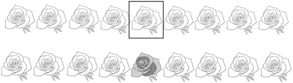
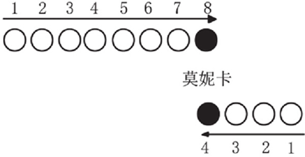
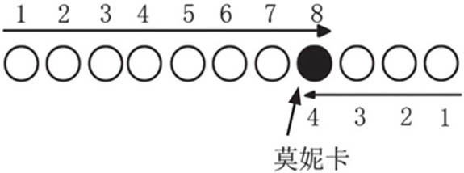
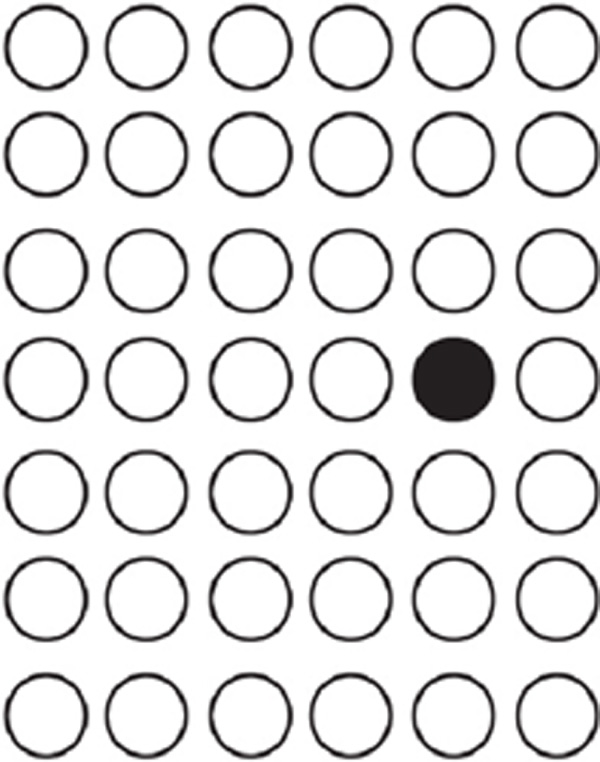
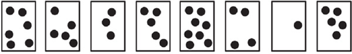
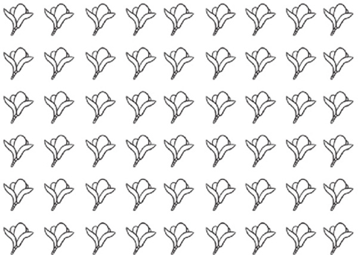

排队问题主要考查3个方面的数学能力：基数、序数和空间方位认知。在排队问题中，孩子要能够熟练地在基数和序数间转换，能够根据空间方位来判断物体所在的位置。
排队问题是生活中常见的问题，如参观买票要排队、购物付款要排队、做操要排队等。如果孩子有很丰富的生活经验，那么孩子在解决此类问题的时候，就会有一个形象上的认知和积累。在实际解决排队问题的时候，孩子可以通过摆放积木来建立更直观的认识，同时也可以通过画简图的方式来分析问题，利用数学的方法解决生活中的实际问题。
典型例题 1 请数一数，把下图中右边的5朵花圈起来，在从左往右数第5朵花上涂上自己喜欢的颜色。
图中一共有9朵花，要把右边的5朵花圈起来，只要从右边开始数，数到第5朵，把这5朵花圈起来就可以了，如下图所示。
从左往右数，下图中用方框圈起来的就是第5朵花，涂上喜欢的颜色就可以了。

典型例题 2 小动物们在排队。
（1）一共有（ ）只动物在排队。
（2）从左边起，第4只动物是（ ）。
（3）从右边起，第4只动物是（ ）。
（4）燕子的左边有（ ）只动物。
从图中可以看出来，一共有8只动物在排队。从左边起，要从骆驼开始数，第4只动物是小鸡；从右边起，要从马开始数，第4只动物是猪。燕子的左边是骆驼、孔雀、兔子、小鸡、猪，一共有5只动物。
典型例题 3 同学们排队做早操，从前往后数，莫妮卡排在了第8位，从后往前数，她排在了第4位，一共有多少个同学做早操？
用圆来代替人，用图来表达题目。

从图上可以看出，一共有8+4-1=11个同学在做早操。这里减去1，是因为多算了1次莫妮卡，实际的图如下。

典型例题 4 马克跟妈妈去看电影，电影院里坐满了人，马克的前面坐了3个人，后面也坐了3个人，左边坐了4个人，右边坐了1个人，你知道一共有多少个人在看电影吗？
用圆来代替人，用图来表达题目。

把图上所有的圆数出来，一共有42个圆，所以有42个人在看电影。
1.仔细看下面的图，回答下面的问题。

（1）从左往右数，第4张图片里有（ ）个圆。
（2）从右往左数，第（ ）张图片里有8个圆。
（3）最右边的3张图片上一共有（ ）个圆。
2.仔细看下面的图，回答下面的问题。

（1）在从上往下数第4行，从左往右数第6列的花上涂上你自己喜欢的颜色。
（2）从右下角开始数，往左第3列，往上第4行是哪朵花，请圈出来。
3.仔细看下面的图，回答下面的问题。
（1）上图中一共有（ ）个图形。
（2）从左往右数，☆排在第（ ）个。
（3）从右往左数，○排在第（ ）个。
（4）把左边4个图形圈起来。
4.马克去电影院看电影，他的前面有8排座位，从后往前数他在第6排，你知道电影院一共有多少排座位吗？
5.莫妮卡去电影院看电影，她在售票口排队买票，她排的队伍一共有15个人，从后往前数，她排在第5个，她的前面有几个人排队？
6.17个小朋友排成一队唱歌，从右边往左数，嘟嘟排在第7个；从左往右数，莫妮卡排在第1个。老师让小朋友们从莫妮卡开始“1、2”报数，报2的同学站到后面形成新的一排，你觉得嘟嘟要不要出列？
7.小朋友们排队报数，如果马克正着报是6，倒着报是7，一共有多少个小朋友在排队呢？